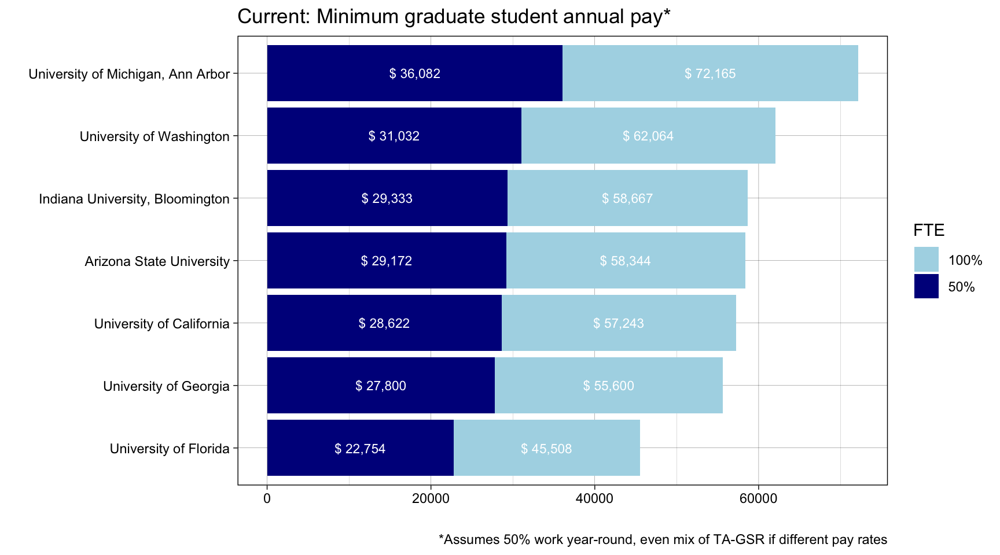
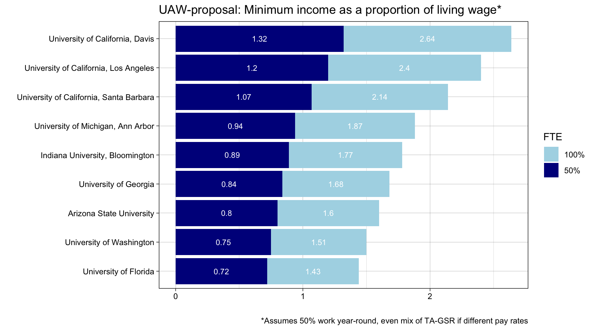
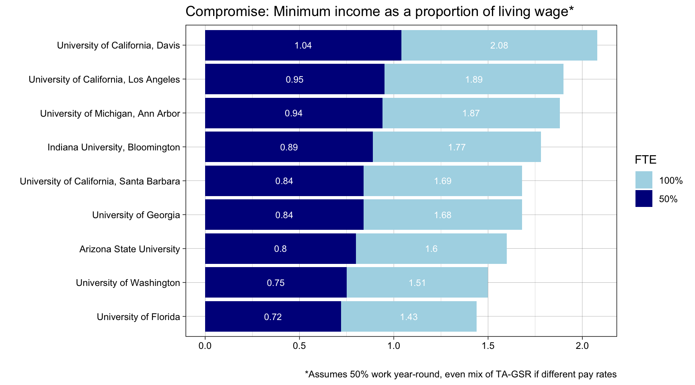

| University | Undergrad # | Postgrad # |
|---|---|---|
| University of California, Davis | 31,162 | 8,869 |
| University of Washington | 32,779 | 16,246 |
| University of Florida | 37,874 | 15,916 |
| University of Michigan, Ann Arbor | 31,329 | 16,578 |
| University of Georgia | 40,118 | 9,952 |
| Indiana University, Bloomington | 34,253 | 11,075 |
| Arizona State University | 38,528 | 10,943 |
Opinion: UC Strike Action Vote
UC students are voting on whether they want to strike this week. The strike is driven by many years running of incremental bargaining for improved cost of living and rights for all types of student-related UC employment, from junior specialists and GSRs, to TAs and post-docs. The main point of the strike that interests me is the proposed cost of living adjustments. I can attest to the general sentiment that graduate students feel over-worked, underpaid, and constantly battling administrative and bureaucratic hurdles to ensure their employment every 12 weeks. But at the same time, the UC bargaining team has proposed a pretty radical number for fair wages for all ‘Grad Workers’ (unspecified in who exactly they mean here): $54,000 as a minimum salary, assuming that graduate students are working 50% year-round.
The Union’s proposal of $54,000 for 50% full-time equivalent (FTE) sounds radically high, and it is. My gut response to this number was rejection – it felt unjustifiable. But before denying it outright, I wanted to understand more about how high this really is relative to current UCD student salaries, and how this compares to other graduate student salaries across the country. This short opinion pieces summarizes what I’ve learned.
Note: This consideration of pay considers ‘Grad Workers’ as Teaching Assistants and Graduate Student Researchers. While Fellows are a part of the newly formed SRU and are currently bargaining alongside the GSRs and TAs, I have already seen language in the UC’s proposals to define Grad Workers as those ‘paid through UC Path’, which I think excludes Fellows.
How much money do UC graduate students make?
First things first: What is the pay baseline we’re starting from? The UAW website says that the ‘most common’ salary for graduate students is $23,247, citing UCDP. I assume this is UC Data Portal, but it is not clear how to access this, when the data is from, and how that was calculated. So instead I took data from the UCD Grad Studies Pay Scale document that comes out annually (this one is old because, well, still bargaining). Here we have a flat TA rate of $46,493, which is a 9-month rate at 100%, calculating out to $2,582.95 each month TAing at 50%. There are also GSR rates, which has default steps for a compensation plan, whereby Step III is (usually) the initial appointment. I will consider this the GSR minimum, based on my understanding of the system, though this decision may make graduate student minimum pay appear slightly higher. The Step III GSR rate is $52,604 at a 12-month rate, calculating out to $2,191.84 each month GSRing at 50%. My general understanding is that these pay rates are standardized across the UC campuses. A quick look at the pay scales for UC Santa Barbara and UCLA seem to confirm this.
Using these data, I define the minumum graduate student income to be some mix of these two employment methods, where a student’s annual salary working year-round at 50% with a 50/50 mix of these appointments is $28,648.62. This is a pretty big departure from UAW’s estimate, especially considering this is my minimum compared to what sounds like their idea of average (my calculated average is $29,621). That aside, we’ll proceed with my estimated minimum because it followed a standardized approach (50% mixed appointments), which I use for understanding other university pay rates.
How does UC pay compare to other graduate programs?
It is important to know your worth on the market. Graduate students generally know that pay is low, but how low is too low? What is a competitive asking price? One way to answer this question is compare UC salaries to other graduate pay rates across the country.
I selected a handful of other universities that feel comparable to where I am housed (UC Davis), and that have some overlap with my work in environmental policy. They feel comparable in that they are large public universities from various locations across the country, capturing a range of living costs. And as a member of the Environmental Science and Policy Department, I wanted to know how graduate students are paid in schools that have comparable Environmental Science/Environmental Policy programs. I settled on the following universities, with their details below:
I grabbed the pay rates for graduate students from each of these schools. The details of where I found and collated these data can be found annotated in my grad-pay-rate script. From my look across these documents, other universities tend to set a clear minimum for graduate pay, but less detail on the various employment categories. Because this is the case, I’ll stick with using the minimum pay for these graduate programs when comparing pay scales.
Let’s first see how UC grad student pay measures up in absolute terms.

So, in absolute terms, UC is somewhere in the middle of the pack according to minimum pay rates. But these are in absolute terms. How does this pay relate to the financial demands of the location? This is what I explore next.
How does UC pay compare to other program given the cost of living in each city?
How to measure cost of living in a city is not easy. UAW seems to be relying on union member surveys to gather data on how much rent costs are for graduate students, which they use as the basis to discuss rent burden. I’m not entirely convinced by their approach here, but luckily, there are tools that can provide some rich data on cost-of living. I rely on the MIT’s Living Wage Calculator, which I think provides a well-documented understanding of living wages (thank you Tara Pozzi, for suggesting this resource).
| University | City | MIT Living Wage |
|---|---|---|
| University of Michigan, Ann Arbor | Ann Arbor, MI | $ 38,537 |
| Arizona State University | Tempe, AZ | $ 36,504 |
| Indiana University, Bloomington | Bloomington, IN | $ 33,065 |
| University of Florida | Gainseville, FL | $ 31,748 |
| University of Washington | Seattle, WA | $ 41,198 |
| University of California, Davis | Davis, CA | $ 40,930 |
| University of Georgia | Athens, GA | $ 33,042 |
| University of California, Santa Barbara | Santa Barbara, CA | $ 50,497 |
| University of California, Los Angeles | Los Angeles, CA | $ 44,961 |
Note that these calculated estimates should be taken with a grain of salt. For example, MIT estimates that housing costs under ‘living wages’ are $1,174/month in Davis, while UAW estimates somewhere between $1,131-$1,643. MIT’s estimate is based on Yolo County, and for areas like Los Angeles, the estimate is based on the whole of the metropolitan area. So of course, it should be recognized that areas close to universities campuses are perhaps more expensive than the ‘greater area’ represented by these MIT calculator numbers.
With that caveat, let’s take a look at what the minimum graduate student pay is, as a proportion of the area’s living wage.
Once adjusting for the cost of living, UC compares poorly to its peers. The average proportion of the living wage covered by 50% employment (at the minimum rate) by the six other schools in these data is .82. UC Davis, one of the cheapest UC campuses, is 12% lower than the mean proportion of these living schools, coming in at .7 of the area’s living wage. Pricier UC campuses fare even worse, with graduate students at UCLA making .64 and UCSB making .57 of the living wage. From this preliminary look, it is pretty clear:
How do Union demands map onto national grad pay norms?
The UC’s current proposal – which has been rejected by the Union – is for a 7% salary increase in year one. This kind of raise would bring the minimum from $28,622 to $30,625.54. For the Davis, LA, and Santa Barbara campuses respectively, this would still leave grad students at .75, .68, and .61 of the living wage. This still leaves UC campuses far below average compared to its peers.
Instead, UAW’s proposal sets an ambitious new minimum of $54,000 at 50% FTE. Compared to the current minimum pay, this is a 88.6% rate of increase, 1.32 times the living wage in Davis. Compared to other universities, it looks like a big ask:

The union’s proposal is high, and perhaps overshoots a justifiable mark. But so what would a more realistic ask be? Based on data from comparable universities, it seems like 90% of a city’s living wage is a competitive ask. Because the UC wants to set UC-wide pay grades, let’s take a look at the living wages across 9 UC campuses (SF excluded):
| UC Campus | Living wage |
|---|---|
| Berkeley | $ 53,149 |
| Santa Barbara | $ 52,675 |
| Los Angeles | $ 45,536 |
| San Diego | $ 47,304 |
| Riverside | $ 38,821 |
| Merced | $ 34,219 |
| Irvine | $ 51,843 |
| Santa Cruz | $ 54,571 |
| Davis | $ 40,930 |
The values from across MIT’s Living Wage Calculator estimates that the median cost of living across the 9 campuses is $47,304, and 90% of that is $42,573. Let’s take a look at how this proposal adjusts UC’s place among its peers for graduate student pay.

With this more reasonable, UC-wide proposal, UC Davis is very comfortably at the top, making right around a living wage for the area. But campuses like Santa Barbara (and also even more expensive campuses like Berkeley and Santa Cruz), are still very average in terms of pay as a proportion of a living wage. Personally, I think the differences between cost of living are so considerable that it would be fair to be negotiating for 90% of living wage adjusting for the campus. If this were there case, Davis’s campus would still be competitive by offering a minimum wage of $36,837.
Re-analysis in the context of barganing
Here’s my take: UC proposes as 7% raise, UAW is asking for an 88% raise, and my data is pointing to a more realistic/competitive ask of 45% raise. And well, if bargaining works where folks end up meeting in the middle, then we’d land right about at the 40% raise mark, which feels like a competitive win. So my impression is that the strike should not be about getting to $54,000, but rather, starting high in response to UC starting very, very low, and using that to land on a reasonable middle ground where the UC system can be competitive among its peers. I encourage folks not balk at $54,000, rather to think critically about how this demand can help us enter the bargaining room with plenty of room for compromise and discussion about fair wages.